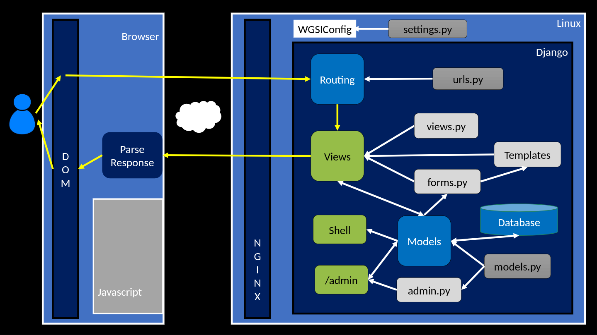

Overview
This is it, the last week of CSC 221: Introduction to Problem Solving and Programming! We explored a lot this semester, and you are leaving this course with a better understanding of what computer programs are and what they can do, and with a solid advanced beginner's level knowledge of the Python programming language. We'll tack on next Tuesday to this last week. When you come in at the start of February, you will be in ITP 225: Web Scripting Language.
That said, from a practical point of view you won't feel any difference, since we've fused these two courses together in our study plan, and have already made the transition from this course, with its introduction to Python to the next one, in which we will use the large Python web application framework Django to learn to build web applications.
Tuesday, January 28th
Classwork
Welcome to our final class of CSC 221: Introduction to Problem Solving and Programming!
We have accomplished a lot this semester - deepening and developing our programming skills using Python, getting Python certification, and beginning to apply our program skills toward web application development.
As we've mentioned several times already, when you arrive in class next Monday you will be in a different course, ITP 225: Web Scripting Languages, but from a learning perspective, we will simply pick up where we left off here.
Today we'll chat about security - we know enough now to be dangerous, so there is some responsibility involved in building the kinds of dynamic web applications what we'll build this semester.
We'll spend a few minutes reviewing Dr. Chuck's danger example and then we'll play with some of our own examples. Specifically, we'll layer in our knowledge of SQL to investigate SQL Injection Attacks and our knowledge of JavaScript to investigate Cross-site scripting attacks
Once we understand the theory, we'll try it out by hacking a bank (... a pretend one!) Here's our victim
Finally, we'll look at the silly story of Little Bobby Tables
Homework
No homework! Let's all take the long weekend to rest, reset, and prepare for the new semester!
Friday, January 24th
Classwork
We will begin class today with a quiz on our Django views homework lectures.
We'll then spend the rest of class getting to know the django_projects repo that you forked last class.
Homework
- Watch Using Templates in Django (10:05) and Using the Django Template Language (DTL) (11:00) from the Django View and Templates lesson.
- Prepare a 8 x 11 1/2 sheet of paper (front and back) with notes that you could use on a possible quiz on these lectures at the beginning of our next class.
Wednesday, January 22nd
Classwork
We will begin class today with the promised quiz on your homework lectures.
After which we will take a quick look back at where we have been recently:
- We did a brief study of SQL and learned how to use SQLite to create and query database tables.
- We learned about Django Models and how the ORM enables us to write Python code which controls our application's data base.
- During your last homework assignment, you were introduced to the MVC software design pattern and how Django implements this pattern in its own unique (and somewhat confusing) way.
connecting it with another look at Dr. Chuck's big picture
diagram:

in light of our new understanding.
Next we will guide you through forking our Django Projects repo, and we will talk about how we plan to use it and how it will relate to the DJ4E Samples repo that you cloned last week (Note: we'll talk about why you cloned last week, but we want you to fork today).
Homework
- Watch Dr. Chuck's videos, URL Routing in Django (6:59 min) and Django Views (6:19 min).